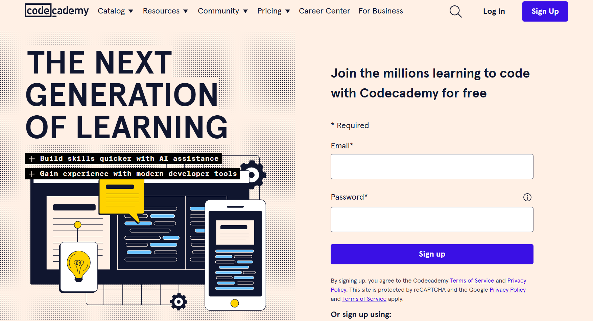
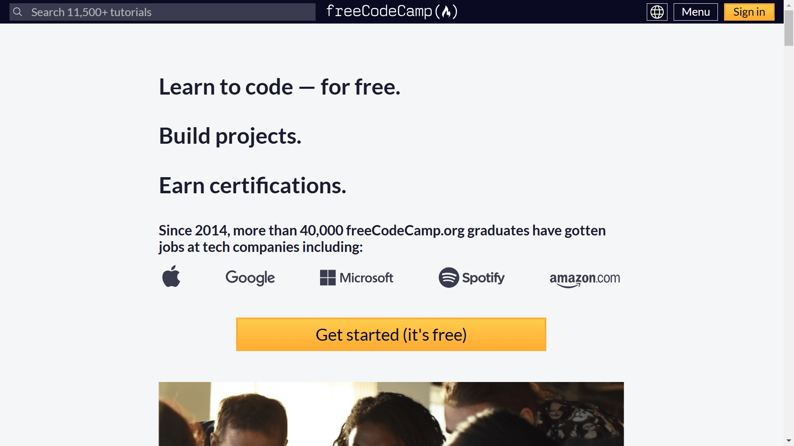
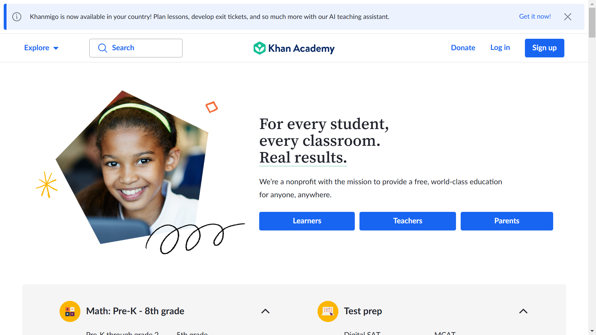
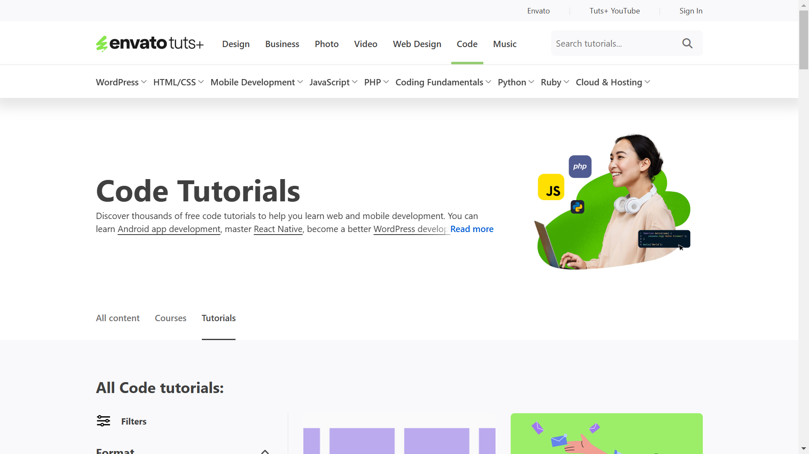
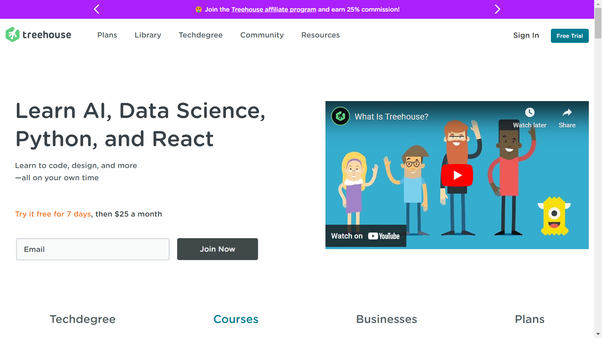
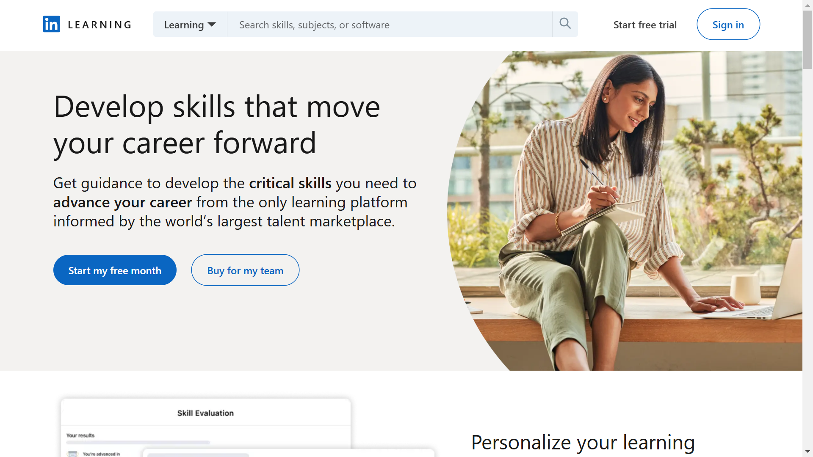
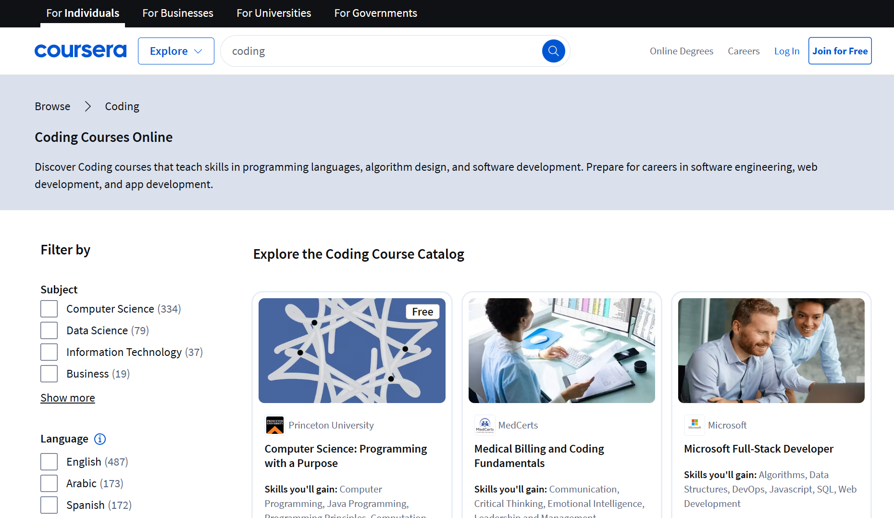
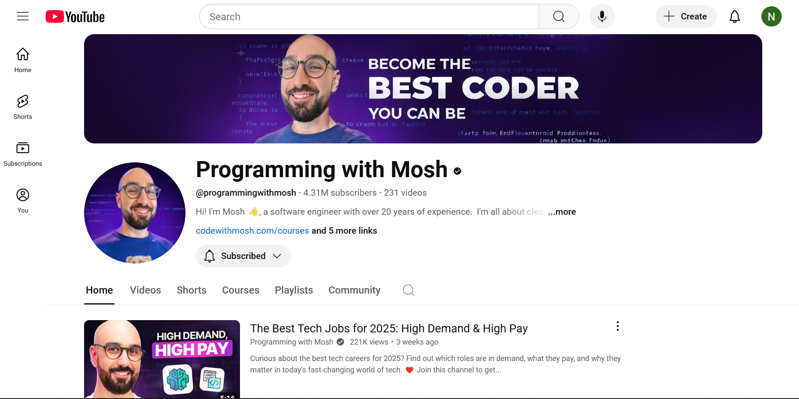

Different Platforms one can learn how to code
Code is becoming an essential skill in our modern world, and more and more people are looking to learn how to code because of the wide variety of careers available to coders. Whether you want to learn software development, work as a developer, or develop websites, you’ll need some coding skills. Knowing how to code can give you an edge in this competitive industry, allowing you to work more independently and gain more flexibility in your career path.
Why You Should Learn to Code
Even if you hire a programmer for the heavy lifting or use a website builder, understanding the basics of how to code can make you better at maintaining your website and doing a lot of the smaller tasks that will come up over time. There are some benfefits that accompany coding, these include:1. Improve ones critical thinking skills and foster creativity as well improves a person's problem solving skills
2. For advanced reasons it helps in career advancements and allows for flexibility as one is able to work from anywhere
3. Understanding programming languages can help you gain insight into other areas of technology
In short, knowing how to code can help you keep up with the world that is in an ever developing state in regards to technology as there are many fields that need people who know how to code and are familiar with such programming languagesThe good news is that basic coding isn’t even all that hard. It definitely looks intimidating at first, but as with any new skill, learning it is just a matter of taking some time and finding the right resources and as one progresses one will be able to slowly learn the advanced aspects of coding We can’t help you with time, but we can point you in the right direction for coding resources.
There are thousands of resources on the web to help you learn how to code, but figuring out which ones are best can be tricky, especially if you’re new to coding. So if you’re ready to begin learning how to code, here are some great places to start!
Free Website Platforms
1. Codecademy
Codecademy is an educational website with interactive coding tutorials. The tutorials are designed to make programming easy and accessible for beginners. Codecademy covers HTML, CSS, JavaScript, Python, and Ruby.
It is free to use but it also has the option to premium and you get more advanced courses and additional features. The site contains a discussion board where users can post questions to get help from other users. The best part about this site is that you learn by doing instead of just reading articles or watching videos about how code works.
The courses include a set of explanations and instructions and a code editor where students can hone their skills. You can choose the free plan, which includes interactive lessons and daily practice but is limited to the fundamental courses. Alternatively, they offer a paid plan if you want to learn more in-depth.
Its Pro plan costs $ 19.99 monthly and $ 15.99 annualy, where you get access to pro-member content, advanced courses, and certifications upon completion. This is an excellent website for those without coding experience or who want a refresher course. The site uses a conversational teaching style and does not get too technical.
2. FreeCodeCamp

FreeCodeCamp is a non-profit organization dedicated to teaching computer science to people of all ages. Its purpose is to provide free, open-source curricula and extracurricular resources for anybody, regardless of aged, or prior knowledge, to learn computer science. This platform teaches through a project-based approach.
Each course begins with an introductory video, followed by textual materials, quizzes, and a practical learning coding project. Students are encouraged to focus on their projects and submit them after completing them.
FreeCodeCamp is one of the most well-known online coding learning platforms. It boasts thousands of graduates who have gone on to work for famous firms such as Google, Apple, and Netflix. After signing up, you’ll be given a list of classes arranged in order of difficulty. So you may immediately begin learning code at your own pace
3. Khan Academy
Khan Academy is a non profit organisation created by salman khan. Salman Khan built the platform to offer an educational resource that everyone may use. It provides user freindly courses teaching users coding languages like HTML, CSS, JavaScript, Python, Ruby, C++ and mady more.
It provides one with a Persoanlized Learning Dashboard. It teaches users by provding them with tutorials / Video lessons Practice execercies and Quizzes are also given to assess their understanding of concepts It is accessible for teachers, students and parents.
4. W3 School

W3 School is a free popular online learning platform specializing in web technologies. It offers tutorials, references and exercises covering a wide range of topics related to web development. It teaches users various web technologies that include HTML, CSS, JavaScript, SQL, Python, PHP, and more.
They’re a good resource for learning the basics if you learn well by reading, and they’re a good go-to resource to bookmark for when you need examples or a refresher on how to do something down the line.
Paid Website Platforms
While you can achieve a level of understanding with free resources, paid options for learning to code online will usually go deeper and/or offer features that make learning more effective, like interactive projects and instructor feedback. These platforms offer a one-week free trial so you can try them out for that week before giving them your cash
1. Envato Tuts +
Price: Individual is $16.50 monthly, Team depeding on the mebers the price will Change.

Envato Tuts + is an online learning platform that offers a wide variety of courses, tutorials, and ebooks on creative and technical skills. It's part of the Envato ecosystem, which also includes marketplaces like ThemeForest, CodeCanyon, and GraphicRiver.
Their pricing covers all the courses, as well as a number of resources like templates and fonts you can use in your web design projects.
They cover a wide array of subjects including:
Web development: HTML, CSS, JavaScript, and more.
Design: Graphic design, Branding.
Photography & Video: Photo editing, video production, motion graphics.
2. Treehouse
Price: Course is $25 monthly, course plus is $49 monthly, and Techdegree is $199 monthly

Treehouse is an online learning platform that offers a library of tech courses in a variety of languages that cover coding and programming topics like HTML, Python, and JavaScript. It is aimed at people who want to learn programming, web development, design, and more, either from scratch or to enhance their existing skills all at a price.
If you are looking to go further in your learning, they also offer a Tech degree program that works more like a bootcamp, meaning the learning is more guided. You will receive a certification for each program you complete, and an expert will review your coursework.
3. Linkedin Learning
Price: $29.99 per month, or $240 a year

Linkedin Learding LinkedIn Learning offers over 300 courses in programming languages, ranging from courses that only take a couple of hours to complete and cover basic concepts, to those that take 20+ hours and go more in depth. LinkedIn Learning offers a one-month free trial, so if there’s only a course or two you’re interested in, you can potentially complete them before payments are meant to start. Or you can use the one month to get to know what they're offering, the different features and others before proceeding with the payment.
4. Coursera
Price: Varies depeding on the courses chosen

Coursera is a platform that offers over 250 courses about coding, including some associated with known universities and familiar tech brands like Google. Some courses on Coursera are free, but most covering coding skills come at a cost, typically around $50.
Youtube Chanels
Learning to code has become increasingly accessible, largely due to platforms like YouTube. This resource provides an extensive array of free tutorials and courses designed for various programming languages and skill levels. Unlike traditional online learning platforms, YouTube allows learners to select from a variety of teaching styles, fostering a more personalized learning experience. With a wealth of real-world examples and projects available, you can put your skills into practice in practical scenarios.1. Coding with Mosh
Coding with Mosh Mosh, a software engineer with over 20 years of experience. He is all about clear, concise, practical coding tutorials - no innacuracy, just the good stuff! His courses focus on real-world projects and the skills that will get you hired. He has helped millions of students transform their careers.
2. Bro Code

Bro Code This channel is dedicated to providing free education to those that can't afford college, bootcamps, and overpriced coding gurus try to sell you.